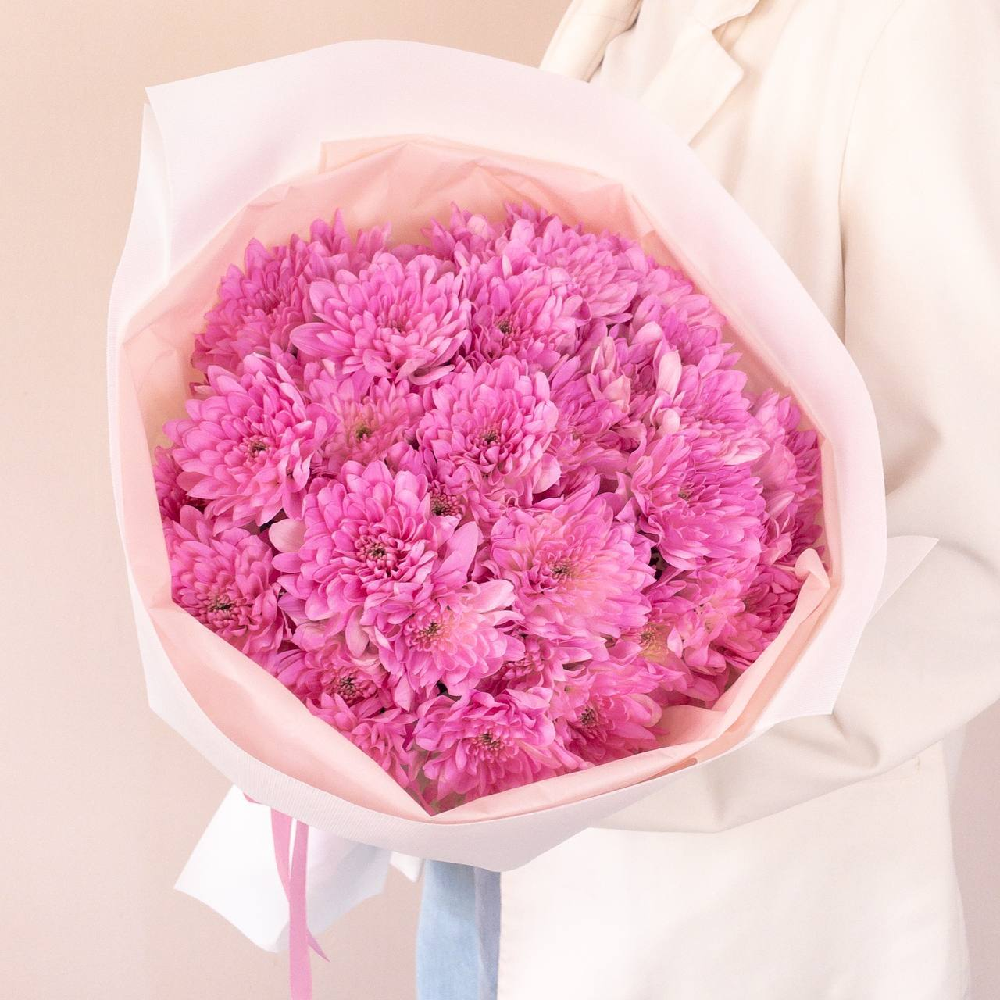

Хризантема — цветок долголетия, счастья и мудрости. Её пышные, махровые соцветия дарят ощущение тепла и уюта, а разнообразие форм и оттенков впечатляет.
Хризантема родом из Китая и Японии, где она считается священным цветком. В Японии существует даже Орден Хризантемы — высшая государственная награда. В Европу хризантемы попали в XVII веке и быстро завоевали популярность. Существует более 10 000 сортов хризантем: от мелкоцветковых до крупноцветковых, от простых ромашковидных до огромных шарообразных. Цветовая гамма включает все оттенки белого, жёлтого, оранжевого, розового, красного, бордового, сиреневого и даже зелёного. Хризантемы цветут осенью, когда большинство цветов уже отцвели, поэтому их особенно ценят флористы. В срезке хризантемы стоят очень долго — до трёх недель.